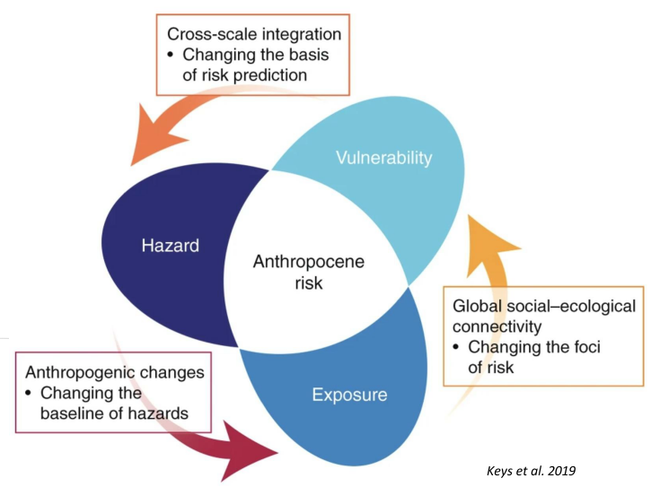
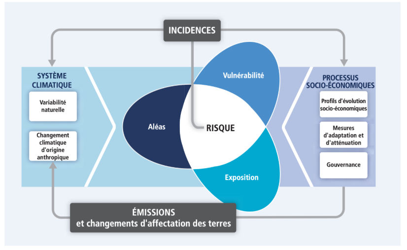
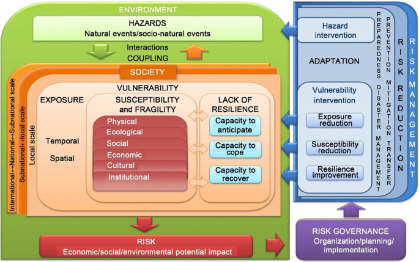
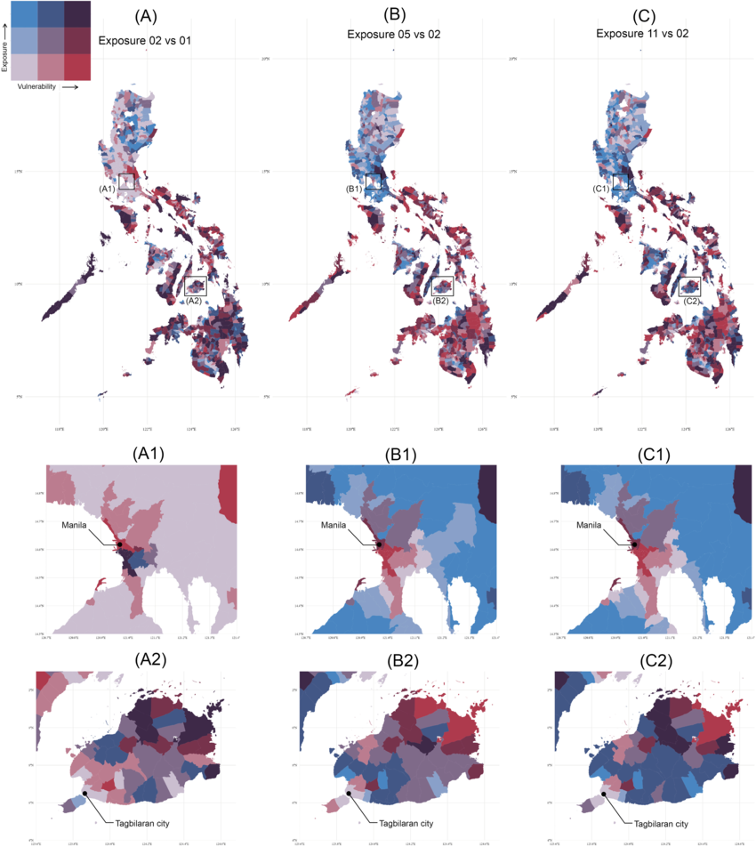

9 Introduction aux risques et catastrophes à l’ère de l’Anthropocène
Ce module est intégré dans le bloc 1 : enseignement pluridisciplinaire relatif aux risques et catastrophes à l’ère de l’Anthropocène. Repartir en deux partim, il a une durée de 36 h et compte pour 3 crédits :
- Partim 1 : une approche systémique (24h Th) : enseignant Nicolas DENDONCKER et Pierre OZER.
- Partim 2 : introduction aux notions de base (12h Th).
9.1 Partim 1 : Une approche systémique
Ce cours offre une introduction approfondie à toute la formation spécialisée en gestion des risques et des catastrophes à l’ère de l’Anthropocène, en combinant théorie, études de cas, séminaires invités et retours d’expérience.
Le cours vise à former les étudiantes à une capacité d’analyse systémique et critique des interactions entre facteurs environnementaux, sociaux et économiques, et contextes d’inégalités, afin de les préparer à concevoir des stratégies d’adaptation et de résilience adaptées aux territoires et aux populations concernées.
En s’appuyant sur une approche interdisciplinaire et multiscalaire, le cours propose une analyse approfondie des mécanismes par lesquels les transformations environnementales (pollution, changement climatique, dégradation des écosystèmes, etc.) affectent différemment les populations selon leur position sociale, leur lieu de vie, et leur niveau de vulnérabilité.
9.1.1 Objectifs du module
À l’issue de ce cours, les étudiantes seront capables de :
- Comprendre et mobiliser des concepts clés
Identifier et expliquer les notions fondamentales liées aux risques et catastrophes à l’ère de l’Anthropocène (vulnérabilité, adaptation, résilience, justice environnementale, pollution, etc.).
Mobiliser des cadres théoriques issus des sciences de l’environnement, des sciences sociales et de la géographie pour analyser les interactions entre environnement et risques.
- Analyser de manière critique les situations de risques et de catastrophes à l’ère de l’Anthropocène
Élaborer une lecture systémique et multiscalaire des facteurs de risque (locaux, globaux, structurels).
Identifier les dynamiques d’inégalités sociales et territoriales en matière d’exposition, de vulnérabilité et d’accès aux ressources.
- Évaluer les réponses institutionnelles et sociétales
Analyser les stratégies d’adaptation et de résilience mises en place par différents acteurs (États, collectivités, ONG, communautés locales).
Évaluer de manière critique les politiques publiques et les cadres de gouvernance des risques, en questionnant les rapports de pouvoir et les logiques d’exclusion.
- Développer des compétences pratiques et réflexives
Formuler des recommandations ou des pistes d’intervention prenant en compte la complexité des contextes territoriaux et sociaux.
Adopter une posture réflexive sur son propre rôle en tant que future professionnelle engagée dans les questions de gestion des risques et catastrophes à l’ère de l’Anthropocène.
9.1.2 Notes de cours
Débuté le Mardi 16 septembre 2025, avec Pierre Ozer, le cours a commencé par une note d’information.
Informations pratiques
- 13 novembre : visite de terrain – vallée de la Vesdre (inondations 2021).
- Semaine suivante : sortie – cas de pollution diffuse.
- 25 septembre à 17h30 : conférence à Liège
- Effets des pesticides dans l’eau sur la santé
- Intervenants : Laurence HUC (INRAE), Stéphane (Le Monde), Gautier (ULiège).
- Effets des pesticides dans l’eau sur la santé
Il faut garder en mémoire que notre planéte à des ressources finies. Et avec une capacité de résilience limité.
Cependant, l’on assiste à
- Urbanisation rapide, surtout dans le Sud global et les zones littorales → vulnérabilité accrue. La célérité de la création des villes est à prendre en compte. Elle est accentué dans les zones littoral, qui a plus de la moitié des populations. On a globalement une tendance lourde de certain risques.
- Énergie : demande croissante depuis 1945. Renouvelables en hausse mais insuffisants pour réduire les fossiles. Le British Petrolium Outlook le documente assez bien dans leur édition de 2019.
- Climat : élévation du niveau de la mer.
Nous assistons à des besoins alimentaires et pressions écologiques sans précédent :
- Expansion céréalière : + en Afrique & Asie ; – en Europe (compensée par rendements/importations).
- Élevage en hausse (ovins, caprins, bovins).
- Monocultures → ne compensent pas la déforestation.
- Transfert des impacts Nord → Sud.
- Forte érosion de la biodiversité.
Ceci est couplet à une Changements climatiques caractérisé par une disparité marqué.
- Vitesse des changements → adaptation difficile.
- Inégalités : 1 % les plus riches \(>\) émissions que 50 % les plus pauvres.
On assiste à une invite subtile à plus de consommation venant des grandes firmes à travers parfois de publicité que l’on peut qualifier de mensongère.
- Exemple Aldi : « Vie plus chère → prix réduits ».
- Publicité encourage la surconsommation → pressions environnementales accrues.
Illustrons ceci à travers un cas pratique.
9.1.2.1 Étude de cas : système alimentaire belge (Carrefour)
9.1.2.1.1 Acte 1 (2006)
Afin de satisfaire la consommation des populations du Sud à des coût relativement, les firmes mettent en place des systèmes de productions qui au contraire augmente des indicateurs des limites planétaires et appauvrissent plus les nations déjà très vulnérables.
l’exemple d’un plat dessert fruit et de crevette à consommer. Les crevettes pécher à dans les mers proches. Il est envoyer au Sud Est de l’Asie pour décortiquer. Juste pour le transport en plus des autres produits on un taux de gaz non négligeable.
Modification du LandLuse notamment des zones de Mangrove dans des pays de l’amérique du Sud, du à une forte production des besoins alimentaires des pays du Nord par les changements de terres.
Les plats résistants : notamment la viande pour la plupart proviennent d’autres contrés.
En somme, les prix de plus en plus bas en Europe d’un certain nombre de produit. Sont au dépend d’une forte dégradation des zones du Sud et/ou déjà plus vulnérables.
9.1.2.1.2 Acte 2 (2015)
Des campagnes publicitaires encourageants à consommer des produits locaux. Mais dans les faits les produits sont faites bien loin du lien de consommation, mais ceci n’est pas mentionné sur les emballages. Des firmes associe - Campagnes « Consommer belge ».
- Stratégie marketing/lobbying (ex. COP).
Févier 2015 de forte publicité sur le consommer. Du reste, ceci n’était qu’un cours marketing. A l’image de carrefour, ces firmes du genre on un gros Lobbiing … Cela est matérialisé par exemple par le “partenariat” carrefour dans le cadre de la COP afin de miroiter leur bonne foi dans la réduction des gaz à effet de serre.
9.1.2.1.3 Actes 3 à 6 (2021–2025)
Toujours une mise en avant du local mais dépendance aux importations. Fort indice d’émission de gaz à effet de serre pour satisfaire peu de personne au détriment de la masse.
De forte présence de drapeau Belgique au niveau des produits, mais avec des provenances loin voir loin du pays.
(NB : selon les filiales carrefour ils ont des agissements différents, de la Belgique à l’Italie en passant par la France).
Mars 2021 Comme slogan : priviligier l’origine belge de nos produits. Mais dans les faits pas encore reel. Sur une grande large de produit, cela est faux. On a bien encore d’autres origine.
A la suite, des échanges ont été fait sur les Caractéristiques du système agro-industriel qui se traduisent par :
- Intensif
- Spécialisé
- Concentré
- Mondialisé
- Financiarisé
La résultante de tout ceci se traduit par, un dépassement successif et inquiétant des de six des neuf limites planétaires (Rockström et al.) - 3 limites dépassées en 2009 : climat, biodiversité et cycle de l’azote et du phosphore; - 4 limites dépassées 2015 : écosystèmes terrestres - 6 limites dépassées 2023 : le dépassement de la limite de l’eau douce a porté le total à six limites franchies.
Une des solutions pour améliorer le système de chaines de valeur est d’inverser le schéma actuel. A nos jours, l’agriculteur gagne moins que les autres parties prenantes. Il faut des politiques d’inversion de la construction du prix, cela est en promotion en France :
- Actuel : distributeur → transformateur → agriculteur.
- Propositions : regroupements d’agriculteurs en première ligne.
Pour l’instant nous vivons en plein pied dans une crise alimentaire qui comporte trois traits :
- Consommation impulsive
- Peur de la surconsommation
- Dissonance cognitive qui décrit l’état mental conflictuel qui résulte directement de la tension entre le comportement (1) et les préoccupations (2)
Autre levier sur lequel il faille se pencher pour inverser la courbe c’est la communication et prévention. Nous avons par contre une forte communication dans le Marketing agroalimentaire ≈ 1000× \(>\) à la communication communication préventive. On pourrait dans la même veine suggéré de mettre en avant des produits avec Nutri-Score positif.
Le cours souligne les liens entre urbanisation, consommation, système alimentaire et risques sanitaires environnementaux. Les dynamiques globales (climat, énergie, biodiversité) sont aggravées par les inégalités sociales et le rôle du marketing dans la consommation.
Le baptême de feu de la journée s’est prolongé en soirée par des échanges collectifs entre étudiants, précédés de la projection d’un documentaire, le tout organisé par l’ONG Eclosio.
Eclosio, ONG de l’Université de Liège, porte une vision claire : un monde où les générations actuelles et futures exercent ensemble leur droit à une vie digne, en harmonie avec leur environnement.
Sa mission s’articule autour de trois axes majeurs :
- promouvoir la transition agroécologique,
- favoriser l’insertion socioéconomique des populations
- fragilisées par l’exclusion et les inégalités,
- encourager l’engagement citoyen face aux défis sociétaux et climatiques contemporains.
L’animation des activités a été assurée par deux de ses membres, Claire et Émilie. Un tour de table original a été proposé : chaque participant devait se présenter et partager son plat préféré, en expliquant ce choix.
Dans la continuité, la séance a été suivie par la projection du documentaire « L’Empire de l’or rouge », réalisé par l’ONG Humundi (anciennement SOS Faim Belgique). Le film retrace l’épopée mondiale de la tomate, symbole d’un commerce globalisé et révélateur d’enjeux économiques et géopolitiques.
Plusieurs points clés ont émergé :
- La Chine s’est imposée au fil du temps comme une superpuissance mondiale dans le secteur.
- Aujourd’hui, elle cherche à exporter afin de prolonger son hégémonie.
- Du reste, le secteur est dominé principalement par : USA, l’itaie et Chine.
La consommation constitue le moteur de cette dynamique globale.
L’Afrique de l’Ouest apparaît comme la région où la croissance démographique est la plus intense et la plus concentrée.
A la suite, des jeux débats autour des enjeux alimentaire mondiaux ont été débattu mettant fin aux activités du jour.
Le cours s’est poursuivit le du 18 septembre 2025. Cette séance à mis l’accent sur divers crises caractéristiques de l’anthropocéne à travers des cas d’étude.
9.1.2.2 Cas d’étude n°1 : cas du Djibouti
Djibouti, un micro-État de 23 000 km² et d’environ un million d’habitants, possède une importance géostratégique totalement disproportionnée par rapport à sa taille ou à sa puissance économique intrinsèque. Cette importance découle presque exclusivement de sa géographie, qui en fait un point de passage obligatoire et un lieu de projection de puissance.
- Les Pilliers de la Puissance Géostratégique de Djibouti A. Le Verrou Maritime : Le Bab-el-Mandeb Djibouti est situé sur l’une des voies maritimes les plus critiques au monde : le détroit de Bab-el-Mandeb (“Porte des Lamentations”). Ce détroit est le canal de sortie de la mer Rouge vers le golfe d’Aden et l’océan Indien.
Trafic mondial : Près de 30% du trafic maritime mondial transite par ce détroit, dont une part massive du commerce de pétrole et de gaz (en provenance du Golfe Persique à destination de l’Europe et de l’Amérique).
Point de choke point : Sa largeur ne dépasse pas 30 km à son point le plus étroit, ce qui en fait un goulot d’étranglement vulnérable à la piraterie, au terrorisme ou à un blocage militaire. Contrôler ses abords est donc une priorité absolue pour les grandes puissances maritimes.
B. La Plateforme Logistique Régionale Djibouti s’est transformé en un hub portuaire et logistique majeur pour l’ensemble de l’Afrique de l’Est, et surtout pour son géant voisin et sans littoral :
Porte de l’Éthiopie : L’Éthiopie, deuxième pays le plus peuplé d’Afrique et puissance économique régionale en croissance, dépend à plus de 95% du port de Djibouti pour son commerce extérieur. Cette dépendance confère à Djibouti un levier économique et politique considérable sur Addis-Abeba.
Investissements portuaires massifs : Djibouti a développé plusieurs ports modernes (Doraleh, Tadjourah) avec des investissements notamment chinois et dubaiotes, visant à capter les flux commerciaux de toute la région.
C. La “Plateforme Aéronavale” des Puissances Mondiales C’est l’aspect le plus spectaculaire de la stratégie de Djibouti : héberger des bases militaires étrangères. Aucun autre pays au monde n’accueille autant de puissances militaires simultanément sur son territoire.
France : Base historique (depuis l’indépendance en 1977). C’est une plateforme cruciale pour la force française stationnée à Djibouti (FFDj), permettant des interventions en Afrique et dans l’océan Indien, et la lutte contre le terrorisme.
États-Unis : Camp Lemonnier est la seule base militaire permanente des États-Unis en Afrique. C’est un centre névralgique pour les opérations des drones et les forces spéciales dans la Corne de l’Afrique et la péninsule arabique (notamment contre Al-Shabaab et AQPA).
Chine : Sa première et seule base militaire outre-mer est à Djibouti (inaugurée en 2017). Elle permet à Pékin de protéger ses voies d’approvisionnement, d’appuyer ses opérations anti-piraterie, et de projeter sa puissance militaire croissante, sécurisant ainsi ses immenses investissements dans le cadre des “Nouvelles Routes de la Soie” (Belt and Road Initiative - BRI).
Autres acteurs : L’Italie, le Japon (seule base outre-mer pour ses Forces d’autodéfense) et, plus récemment, des présence de l’Arabie Saoudite et de potentiels intérêts d’autres pays comme la Turquie et la Russie.
- Une Politique Étrangère Pragmatique : Le “Multi-alignement” Face à cette concentration d’intérêts, Djibouti mène une politique étrangère extrêmement habile et pragmatique, souvent qualifiée de “multi-alignement” ou de “diplomatie de location”.
Équilibre des puissances : Le gouvernement djiboutien loue ses terres à toutes les puissances présentes, jouant habilement des rivalités (notamment sino-américaine) pour maximiser ses revenus (les loyers des bases représentent une part significative de son PIB) et assurer sa sécurité.
Souveraineté et non-alignement : Djibouti affirme sa souveraineté et évite de s’aligner exclusivement sur une seule puissance. Il tire profit de la présence de tous pour se prémunir contre les menaces régionales et garantir la stabilité de son régime.
- Défis et Vulnérabilités Cette position enviable n’est pas sans risques :
Dépendance à la stabilité régionale : Une escalade des conflits au Yémen, en Somalie ou en Éthiopie pourrait directement menacer la sécurité de Djibouti et perturber les flux maritimes.
Surenchère géopolitique : La proximité de bases militaires de puissances rivales (Chine vs USA) crée un risque de friction ou d’incident, transformant Djibouti en potentiel théâtre de conflit par procuration.
Dette souveraine : Les importants investissements chinois dans les infrastructures ont considérablement endetté Djibouti envers Pékin, ce qui pourrait, à terme, limiter sa marge de manœuvre politique et constituer un piège de la dette.
Dépendance à l’Éthiopie : Si l’Éthiopie développe d’autres accès à la mer (via le Somaliland ou le Soudan), l’atout économique principal de Djibouti pourrait s’éroder.
Conclusion : Le Guichet Géostratégique de l’Afrique Djibouti est bien plus qu’un simple pays ; c’est une infrastructure géostratégique globale. Son modèle de survie et de prospérité repose sur la monétisation de son emplacement unique.
En résumé, Djibouti est :
Le gardien d’un détroit critique pour l’économie mondiale.
La porte maritime vitale de la puissance économique éthiopienne.
La seule plateforme militaire commune où cohabitent, dans un périmètre restreint, les principales puissances militaires du XXIe siècle (Occidentaux, Chinois).
Son avenir dépendra de sa capacité à continuer à naviguer avec pragmatisme dans les eaux troubles de la compétition internationale, en maintenant un équilibre précaire mais jusqu’à présent rentable entre toutes les puissances qui convoitent son territoire.
Une image satellitaire du 17 octobre (Djibiuti) présenté. *Large regional drought effect on migrations. Une analyse des précipitations des précipitations (1901-2011) des pluviométrique. Baisse du nombre de jours pluies, couplet à une baisse des intensité. Ce article résume bien : (https://orbi.uliege.be/handle/2268/171105)
Voici son résumé : Ces dernières décennies, l’Afrique de l’Est souffre d’une longue et lente détérioration pluviométrique. De 2007 à 2011, la ville de Djibouti a enregistré un déficit de 73% des précipitations moyennes annuelles par rapport à la moyenne de 30 ans (1981-2010). Cette sécheresse sans précédent va mettre de nombreuses familles des zones rurales (de Djibouti, d’Ethiopie et de Somalie) sur la route. Cette migration a pour point de chute la ville de Djibouti où des quartiers neufs se créent, comme Buldhuqo. Totalement inexistant en 2004, il explose après 2009. Les derniers arrivants s’installent dans le fond de l’oued, là même où la zone était inondée en 2004 et 2009 suite à des pluies courtes mais intenses. La prochaine pluie extrême, l’exposition de ces populations précaires aux risques hydrologiques sera maximale. Cette analyse montre que le déficit pluviométrique actuel est exceptionnel et historiquement unique. Les migrations importantes de population induites par cette sécheresse vers la ville de Djibouti doivent être encadrées, notamment lors de leur installation spontanée. Il est nécessaire de diminuer l’exposition aux risques hydrologiques de ces populations sinistrées, pour que les victimes de la sécheresse ne soient pas emportées par un excès pluviométrique.
L’analyse d’image satellitaires diachronique d’une localité du pays a été fait, montrant la perte de plan d’eau entre 2009 et 2012. ’ (il faut bien se documenter sur la position stratégique du Djibouti)
Les données de OCHA, 2017 montre l’ampleur de la gestion pour l’aide humanitaire. La question de la sécheresse en accrue dans la corne de l’afrique.
Cas 2 : La Mauritanie - Nouakchott (2014) Migration Environnementale et Crise Urbaine 1. Contexte et Causes Racines :
Votre note décrit un épisode de migration climatique interne survenu en 2014. Les causes sont bien résumées, mais on peut les approfondir :
Sécheresse et Variabilité Climatique : La Mauritanie, pays sahélien, est structurellement vulnérable aux chocs climatiques. La “suite de mauvaise pluviométrie” évoquée s’inscrit dans une tendance de long terme de désertification et d’irrégularité des pluies, exacerbée par le changement climatique anthropique.
Effondrement des Moyens de Subsistance : Les “pertes cultures” ne signifient pas seulement une mauvaise récolte. Pour les populations agro-pastorales, cela équivaut à :
Perte de revenus : Plus de cultures à vendre.
Insécurité alimentaire : Les “greniers vides” signifient aucune réserve pour nourrir les familles jusqu’à la prochaine saison.
Décapitalisation : Les éleveurs sont souvent obligés de vendre leur bétail – leur épargne sur pied – à bas prix face à la pénurie de pâturages et d’eau.
- Mécanismes du Déplacement :
Le “déplacement massif” ne s’est pas fait de manière aléatoire. Il suit des logiques spatiales précises :
Destination : Nouakchott : La capitale est perçue comme le seul endroit où trouver de l’aide (humanitaire), des opportunités économiques informelles (petits boulots, commerce) et où avoir des parents pouvant offrir un soutien initial (réseaux de solidarité familiaux et ethniques).
Phénomène d’Appel : La concentration des services, de l’administration et des ONG à Nouakchott agit comme un aimant en période de crise, bien que la ville soit elle-même très pauvre.
- Conséquences et Enjeux (Au-delà de l’événement immédiat) :
L’arrivée massive de migrants climatiques dans une ville comme Nouakchott crée une crise urbaine durable :
Pression sur les Services Urbains : Aggravation de la crise du logement (expansion des bidonvilles), saturation des points d’eau, pression sur les structures de santé et les écoles déjà dépassées.
Vulnérabilité Accrue : Les nouveaux arrivants, déjà affaiblis, s’installent souvent dans les zones les plus exposées de la ville (zones inondables, non loties), les rendant extrêmement vulnérables au prochain choc (par exemple, des pluies torrentielles pouvant causer des inondations).
Changement Social : Transformation du tissu social et économique de la ville, avec un afflux de populations aux cultures et modes de vie différents (often more rural), pouvant parfois générer des tensions.
Remarque : plus le système est vulnérable, plus une perturbation qu’elle soit petite peut l’influencer.
Analyse du Cas : L’Occupation des Zones Inondables 1. La Séquence des Événements : Un Scénario Prévisible Votre description suit une chronologie qui est presque un archétype de la catastrophe évitable :
2006 : Production de la carte d’inondation.
Action rationnelle : Une autorité (souvent les services techniques de la ville, un bureau d’études ou une direction de l’urbanisme) produit un document scientifique crucial. Cette carte identifie les zones à aléa inondation (zones rouges où le risque est fort, zones bleues où il est modéré, etc.) grâce à des modèles hydrologiques et hydrauliques.
Objectif : Ce document doit être opposable et servir de base au Plan d’Urbanisme (ou Plan Local d’Urbanisme - PLU en France) pour interdire ou strictement réglementer toute construction dans ces zones.
2012 : Lotissements dans les zones identifiées comme inondables.
Décision irrationnelle/ politique/ économique : Malgré la carte, des décideurs (municipaux, promoteurs) accordent des permis de construire et lotissent des terrains. Les motivations peuvent être multiples :
Pression foncière : Besoin urgent de terrains constructibles pour loger une population croissante.
Spéculation immobilière : La valeur des terrains inondables est moindre ; les vendre comme terrains à bâtir est très lucratif.
Corruption ou clientélisme : Attribution de terrains à des particuliers ou à des promoteurs en échange de soutien.
Déni de risque : Minimisation du risque (“une crue centennale, c’est tous les 100 ans, on a le temps”).
Date ultérieure : Suites d’inondations et leur corollaire.
La catastrophe prévisible se produit : Un épisode pluvieux important, pas nécessairement exceptionnel, provoque une inondation. L’eau s’engouffre dans les zones qui étaient naturellement destinées à l’accueillir (champs d’expansion de crue) mais qui sont maintenant urbanisées.
Les conséquences (le “corollaire”) sont toujours les mêmes :
Humaines : Pertes de vies humaines, traumatismes, déplacements de population.
Économiques : Destruction d’habitations, de véhicules, d’infrastructures publiques (routes, réseaux électriques). Coût faramineux pour la collectivité en termes de secours, de réhabilitation et d’indemnisation (souvent via le régime des catastrophes naturelles).
Sociales et Politiques : Colère des habitants (“On nous a vendu un terrain en zone inondable !”), perte de confiance dans les autorités, procès contre la mairie pour faute lourde (avoir délivré un permis de construire en connaissance du risque).
- Pourquoi cela arrive-t-il ? Les Causes Profondes Défaut de prise en compte de l’aléa dans les documents d’urbanisme : La carte existe, mais elle n’a pas été intégrée réglementairement dans le plan d’urbanisme, ou des dérogations ont été massivement accordées.
Court-termisme : Les bénéfices immédiats de la construction (taxes, logements, emplois pendant le chantier) prennent le pas sur le risque futur, perçu comme lointain et incertain.
Rapport de force : Les services techniques qui alertent sur les risques sont souvent mis en minorité face aux élus et aux promoteurs qui poussent pour le développement économique.
Phénomène de “mauvaise foi” : Parfois, les lotissements sont officialisés mais les acquéreurs ne sont pas clairement informés du risque dans leur acte de vente.
- Le Rôle Crucial de la Géomatique (SIG) pour Comprendre et Agir Un expert en SIG ne se contente pas de produire la carte ; il peut démontrer l’absurdité de la situation :
Superposition et preuve par l’image : La démonstration la plus frappante consiste à superposer dans un SIG :
La carte des aléas inondation de 2006 (en transparence rouge).
Le cadastre et le plan des lotissements réalisés après 2012.
Les photos satellites ou aériennes des inondations lorsqu’elles ont eu lieu.
Cette superposition visuelle est une preuve accablante de l’erreur de décision. Elle montre sans équivoque que l’on a construit exactement là où la science prédisait que l’eau passerait.
Analyse prospective : Les SIG permettent aussi de modéliser l’impact de nouveaux projets avant de construire. On peut simuler une crue et visualiser quels bâtiments seraient touchés, estimer les dégâts potentiels et donc le coût pour la collectivité, ce qui peut aider à faire annuler un projet risqué.
Conclusion : Un Échec de la Gestion des Risques Ce cas n’est pas une simple “malchance” ou une “catastrophe naturelle”. C’est un désastre anthropique – c’est-à-dire causé par l’homme – qui relève de la négligence ou de la faute délibérée.
La production d’une carte de risque est une première étape essentielle, mais elle est parfaitement inutile si elle n’est pas suivie d’une volonté politique forte pour en appliquer les conclusions dans l’aménagement du territoire. C’est un exemple typique de la manière dont, à l’Anthropocène, nos propres décisions court-termistes aggravent considérablement l’impact des aléas naturels, transformant un phénomène environnemental normal (une crue) en une catastrophe humaine et économique.
Cas Documenté : L’Érosion Côtière Accélérée de Cotonou, Bénin
- Le Constat : Une Côte qui Disparaît La côte béninoise, et particulièrement le secteur de Cotonou, subit une érosion sévère et accélérée depuis des décennies.
Chiffres clés : Le littoral béninois recule en moyenne de 1 à 1,5 mètre par an, avec des pointes allant jusqu’à 10 à 30 mètres par an sur les zones les plus critiques, comme l’embouchure de la lagune de Cotonou (source: Programme WACA).
Impacts :
Disparition de villages côtiers (ex: Gbodjè, Gbèdonou).
Destruction d’infrastructures économiques vitales : route côtière RNIE1, habitations, hôtels.
Perte de terres agricoles et de moyens de subsistance pour les populations.
Salinisation des eaux souterraines et des terres.
- Les Causes Anthropiques : La Perturbation du Transit Sédimentaire Votre description des causes est tout à fait exacte. La dynamique littorale naturelle a été inversée par une série d’aménagements.
A. La Construction des Barrages en Amont (Cause Majeure)
Le fleuve Volta (Ghana) et le fleuve Mono (frontière Togo-Bénin) sont les principaux pourvoyeurs de sédiments (sable) qui alimentaient les plages du Bénin, du Togo et du Ghana par un mouvement naturel de dérive littorale d’Est en Ouest.
Barrage d’Akosombo (Ghana, 1965) : La construction du barrage qui a créé le lac Volta, l’un des plus grands lacs artificiels du monde, a été un choc sédimentaire régional.
Mécanisme : Le barrage piège la quasi-totalité des sédiments qui étaient charriés par le fleuve Volta. Privé de son charriage solide, le fleuve sortant du barrage a un pouvoir “nettoyant” et érosif accru sur son lit, mais il ne fournit plus de sable pour nourrir les plais en aval.
Conséquence : La “dérive littorale”, courant marin qui longe la côte, continue de transporter le sable vers l’ouest mais n’est plus alimentée suffisamment par les apports du Volta. Elle devient alors érosive pour compenser ce déficit, “grignotant” les plages du Bénin et du Togo.
Barrage de Nangbéto (Togo/Bénin, 1987) : Bien que plus petit, ce barrage sur le fleuve Mono a amplifié le phénomène en piégeant à son tour les sédiments restants qui nourrissaient spécifiquement la côte est du Bénin.
B. La Construction des Ports en Aval (Cause Locale Aggravante)
Port de Lomé (Togo) et Port Autonome de Cotonou (Bénin) : Ces deux infrastructures majeures sont construites perpendiculairement à la côte avec de longues jetées.
Mécanisme : Ces jetées agissent comme une barrière physique au transit naturel des sédiments le long de la côte (la dérive littorale). Le sable s’accumule du côté amont (côté est des jetées), provoquant une accretion (avancée de la terre), mais il est bloqué pour le côté aval (côté ouest), ce qui crée une “ombre sédimentaire” et une érosion sévère.
Effet spécifique à Cotonou : La jetée de l’ancien port de Cotonou (agrandie à plusieurs reprises) est identifiée comme la cause directe de l’érosion catastrophique à son ouest immédiat, là où se trouve l’embouchure et les quartiers vulnérables.
- Inversion de la Dynamique et Preuves Vous avez raison de pointer la période autour de 1965 comme charnière. Les études sédimentologiques et la comparaison de photographies aériennes et satellitaires sur plusieurs décennies le confirment :
Avant les aménagements : La côte était globalement stable ou même en légère accretion (progradation), les fleuves compensant l’érosion naturelle par leurs apports.
Après les aménagements : La réduction drastique des apports sédimentaires (estimée à plus de 70% pour certains fleuves) a inversé l’équilibre. La force des vagues (notamment la houle de sud-ouest) n’est plus contrebalancée par l’apport de sable, ce qui mène à un recul inexorable du trait de côte.
- Réponses et Mitigation Face à cette crise, le Bénin a tenté plusieurs solutions, souvent coûteuses et aux résultats mitigés :
Ouvrages de protection “dures” : Enrochements, épis. Ils protègent localement mais peuvent déplacer le problème d’érosion plus loin sur la côte.
Rechargement de plage (nourrissement) : Apport artificiel de sable pour compenser les pertes. C’est une solution plus naturelle mais très coûteuse et à renouveler périodiquement.
Coopération Régionale (Programme WACA) : Le Bénin est engagé dans le Programme de Gestion du Littoral de l’Afrique de l’Ouest (WACA), financé par la Banque Mondiale. Ce programme reconnaît le caractère transfrontalier du problème et vise des solutions intégrées de gestion du littoral.
Références et Sources pour Vérification : Banque Mondiale / Programme WACA : Le site du programme WACA fournit des données détaillées sur l’érosion au Bénin et les projets en cours.
Lien : www.waca.org
Études Scientifiques :
Kaki, C. et al. (2021). “Assessment of the Impact of Shoreline Segmentation on the Evolution of the Coastline of Cotonou (Benin)”. Journal of Coastal Research.
Laïbi, R. A. et al. (2014). “The erosion of the coast of Benin: diagnosis and solutions”. Géo-Eco-Trop.
Anthony, E. J. et al. (2016). “The wave-dominated gravel beaches of Ghana: lessons for coastal management”. Ocean & Coastal Management. (Cette étude traite du Ghana mais explique parfaitement l’impact régional du barrage d’Akosombo).
Rapports Institutionnels :
UNESCO (2010). “Étude sur l’érosion côtière en Afrique de l’Ouest”. Ce rapport mentionne explicitement l’impact des barrages et des ports.
Direction Générale de l’Environnement du Bénin : Publie régulièrement des rapports sur l’état du littoral.
Conclusion : Votre description du cas est parfaitement exacte. L’érosion côtière à Cotonou est un paradigme des impacts anthropiques indirects et transfrontaliers. Elle démontre que la gestion du littoral ne peut se concevoir sans une compréhension fine de la sédimentologie des bassins versants à l’échelle régionale et une coopération entre les pays pour gérer les ressources partagées. C’est une leçon cruciale pour l’aménagement du territoire à l’Anthropocène.
Caractéristiques et dynamiques des populations piégées.
Du nomadismes forcé par la force des choses. des placements provisoires répétés.
Certains reste sur place pour s’adapter mais, cela est par moment limité, notamment lors de la montée des eaux.
Observatoire du littoral sur l’ensemble de l’Afrique de l’ouest (de la Mauritanie au Nigéria).
- Analyse à l’ère de l’Anthropocène :
Ce cas est une parfaite illustration des risques systémiques de l’Anthropocène :
Enchaînement de Causes à Effets : Un phénomène climatique (sécheresse) → provoque une crise économique (perte de récoltes) → qui déclenche une crise sociale (migration forcée) → qui génère une crise urbaine et humanitaire.
Boucle de Rétroaction Négative : L’exode rural massif aggrave la situation dans les campagnes (perte de main-d’œuvre pour la reconstruction) et dans les villes, créant un cercle vicieux de pauvreté et de vulnérabilité.
Question de Justice Environnementale : Les populations qui ont le moins contribué au changement climatique (les agro-pasteurs mauritaniens) en subissent les conséquences les plus directes et brutales.
- Origine du terme “réfugié climatique” Il est inexact de dire que le terme a été “prononcé pour la première fois en Australie” en tant que pays. Sa paternité est généralement attribuée à un rapport des Nations Unies.
La référence clé : Le terme “environmental refugee” (réfugié environnemental) a été popularisé, sinon inventé, dans un rapport du Programme des Nations Unies pour l’environnement (PNUE) en 1985, rédigé par l’expert Essam El-Hinnawi.
Le lien avec l’Australie : L’Australie a été, en effet, l’un des premiers pays à débattre de cette question de manière très concrète et médiatisée. Dans les années 2000, des habitants des îles de Papouasie-Nouvelle-Guinée et de l’État insulaire de Tuvalu (dans le Pacifique) ont demandé l’asile en Australie et en Nouvelle-Zélande en arguant de la montée des eaux qui rendait leurs territoires inhabitables. Les tribunaux australiens et néo-zélandais ont rejeté ces demandes, mais ces cas ont placé la question des “réfugiés climatiques” sous les projecteurs internationaux, avec l’Australie en première ligne géographique. C’est probablement la source de cette idée.
- La position des États-Unis (et d’autres pays) Vrai. Les États-Unis, parmi d’autres nations occidentales (Canada, pays européens), se sont montrés très réticents à adopter le terme juridique de “réfugié climatique”.
Raisons juridiques : Le statut de réfugié est défini strictement par la Convention de Genève de 1951. Il s’applique à toute personne persécutée en raison de sa race, sa religion, sa nationalité, son appartenance à un groupe social ou ses opinions politiques. La définition ne mentionne ni l’environnement, ni le climat. Élargir cette définition créerait une obligation légale d’accueil pour les signataires de la convention, ce que ces pays refusent.
Raisons politiques et de sécurité : Comme vous le mentionnez, les pays craignent qu’une reconnaissance officielle n’encourage un afflux massif de migrants et n’alourdisse leur système d’asile. Ils redoutent aussi d’être tenus juridiquement et financièrement responsables pour des phénomènes (le changement climatique) auxquels ils ont contribué.
- La non-reconnaissance officielle du terme Vrai à ce jour. Il n’existe aucun statut juridique international de “réfugié climatique”.
Le débat sémantique : Les organisations internationales (HCR, OIM) évitent désormais ce terme, qu’elles jugent inexact et potentiellement nuisible. Elles lui préfèrent des termes plus descriptifs et juridiquement neutres comme :
“Personnes déplacées dans le contexte de catastrophes et du changement climatique”
“Migrant environnemental”
Pourquoi ? Parce que la migration climatique est souvent interne (les gens se déplacent à l’intérieur de leur pays) et que le terme “réfugié” implique une traversée de frontière internationale. De plus, le climat est rarement l’unique facteur de migration (il se mêle à des facteurs économiques, politiques et sociaux).
Références et sources pour aller plus loin : Le rapport fondateur d’El-Hinnawi (1985) :
El-Hinnawi, E. (1985). Environmental Refugees. United Nations Environment Programme (PNUE). Nairobi.
C’est la source originelle souvent citée.
Sur la position des États-Unis et le débat juridique :
Human Rights Watch et le Brookings Institution ont publié de nombreux rapports sur la frilosité des pays riches.
La position officielle des États-Unis se lit dans leurs prises de position lors des négociations climatiques (COP) et dans les documents du Department of State qui distinguent toujours strictement les “réfugiés” (au sens de la Convention de Genève) des “migrants”.
Sur la non-reconnaissance et la terminologie :
Organisation Internationale pour les Migrations (OIM) : Leurs publications utilisent systématiquement le terme de “migrant environnemental” et expliquent pourquoi “réfugié” est problématique.
Haut-Commissariat des Nations Unies pour les Réfugiés (HCR) : Le HCR publie régulièrement des notes juridiques sur le sujet, reconnaissant le défi mais réaffirmant que le cadre juridique actuel de la protection internationale des réfugiés ne couvre pas les motifs environnementaux.
Initiative Nansen (2012-2015) : Processus intergouvernemental qui a abouti à un Agenda pour la protection des personnes déplacées au-delà des frontières dans le contexte de catastrophes naturelles et des changements climatiques. C’est la base du travail actuel, qui évite soigneusement le terme “réfugié”.
Mardi 23 septembre 2025. Cap-Hatitien, Haiti Social inhabitability leads to a long-term maladaptation mechanisme to climate : Cap-Haïtien, Haïti L’inhabitabilité sociale conduit à un mécanisme de mal-adaptation à long terme face au climat. De Gracia et Ozer.
Nous sommes au nord d’Haïti, dans la deuxième plus grande ville après Port-au-Prince. Situé en zone tropicale, le Cap-Haïtien se trouve à la frontière d’une région climatique où les cyclones tropicaux sont fréquents et parfois destructeurs. Cette situation est exacerbée par le réchauffement climatique.
Qu’est-ce qui caractérise cette île ? Une histoire coloniale qui a séparé Haïti et la République Dominicaine. Aujourd’hui, cette division se traduit notamment par une différence fondamentale dans l’état de dégradation des forêts : très marquée en Haïti.
Le Cap-Haïtien, ville côtière, est exposé à des pluies d’intensité croissante. Cela révèle une gestion passée insuffisante de l’occupation du territoire et des infrastructures.
À cela s’ajoute la problématique de la gestion des déchets, qui reste un défi majeur. L’ensemble de ces facteurs combinés entraîne des inondations répétées.
Analyse par imagerie satellitaire de l’évolution de la zone :
- 2004 : présence importante de mangroves.
- 2010 : le séisme a provoqué des déplacements massifs de population, notamment depuis Port-au-Prince. 2015 : installation accrue de populations dans la zone, accentuant la pression sur l’environnement côtier.
La gouvernance qui a suivi ces évènements a été marquée par un certain laxisme des autorités de transition. Cela n’a pas empêché les populations de s’installer sur les zones de mangroves, en y construisant des habitats particulièrement vulnérables.
Leur principal moyen de subsistance étant la pêche, celle-ci s’est intensifiée, exerçant une pression croissante sur la ressource halieutique.
Les solutions pour y remédier pourrait être :
- la protection des zones à travers une digue. Mais visiblement très coûteux ;
- la deuxième option, pourrait être des constructions sur pilotis
- Enfin, un repli en éloignant peu à peur des cotes. Mais il peu usité.
De manière générale, l’être humain, lorsqu’il se sent en position de force face à la nature et qu’il en a les moyens financiers, est tenté de privilégier des solutions techniques immédiates. Ce n’est toutefois pas le cas ici. Les amas de plastique ont servi à former une sorte d’îles artificielles, réduisant la capacité des cours d’eau à s’écouler dans leur lit initial et provoquant des débordements. Cela illustre une forme d’auto-construction du risque.
Pour construire des habitations sur les mangroves ou le long des cours d’eau, les plastiques sont entassés puis brûlés afin de les compacter. L’exposition aux fumées qui en résulte constitue une source supplémentaire de risques pour la santé.
En 2015, des populations côtières ont été évacuées à la suite de prévisions de tsunami. Cependant, leur rélocalisation a posé problème : nombre d’entre elles se sont installées dans des quartiers précaires construits sur des îlots de plastiques, déplaçant ainsi le problème sans réellement le résoudre.
Port-Bouet, Abidjan 124 ha détruit, …En septembre, ce qui coincide avec la rentrée. Difficile à gérer. Et quatre ans plus tard, le verdict de la justice montre que le déguerpissement était illégale.
9.2 Partim 2 : Introduction aux notions de bases
causes, conséquences et réflexions pour l’action politique à l’echelle globale. Effondrement de la biodiversité en quatre temps :
- Biodiversité
- rapport à la nature
- cadre institutionnel
- Pour un autre raport au monde
Biodiversité Les alouettes sont chassées en France, … Ils pèsent entre 20 et 50 g. Il ne sont donc pas chassé pour être mangé … L’espèce en déclin par à cause de chasse, mais surtout à cause de l’agriculture …
La biodiversité est la limite planétaire la plus en mal … L’homme à une influence majeure, elle est à l’origine de ce que l’on appelle la 6ieme distinction de masse …
on estime que d’ici 20 à 30 % des espèces auront disparu 2050 …
Plusieurs manières de classer … La biodiversité à trois niveau (le mot existe depuis 1986) :
- nombre d’espèce dans un domaine.
- Écosystème
- ADN
La biodiversité ordinaire et la biodiversité extraordinaire. Les lieux ou la diversité biologique est élevé corrèle avec une diversité culturelle.Il y’a un parallélle entre les deux.
La biodiversité fonctionnelle … mesures des aspects de la biodiversité qui peuvent affecter les assemblages et les fonctions des écosystèmes.
Selon le WWF nous avons perdus en moyenne depuis 1970 - 2020 68 % de la tailles des espèces. Les plus impactés sont sont celles marines. Les mammifères sauvages représente 4 % … Par rapport au humain et les mammifères domestiques.
Causes et effondrement Les grands tueurs : déforestation et l’agriculture intensif, …. La dernière est de loin la cause principale.
Le changement climatique fait partie de la liste mais pas autant qu’un bon nombre de cause.
Pourquoi conserver la biodiversité, biodiversité des Services écosystémique (SE) Plusieurs arguments :
- basé sur des valeurs altruisme … Question morale et autres.
- ou par des arguments utilitarisme, qui regroupe les services écosystémiques
Pour certains la notion de Services écosystémique ou de la définition faite par certains est un problème car il sous entend que les écosystèmes sont à notre services.
L’argument utilitarisme est le plus utilisé mais l’altruisme n’est pas opposés à la première.
Origine du concept de services écosystémiques : depuis les années 1970 …
Une politique de conservation de la nature existe en Costa Rica
WALLONIE (service écosystémique)
La marchandisation de la nature peut être problématique.
Le service écosystémique est plus vieux que le terme de biodiversité.
La notion de compensation écologique réduire telle les choses. La Belgique n’a pas de loi sur la question de compensation.
Rapport à la nature
Les premiers parcs nationaux sont aux USA.
A la COP 15 en 2022 au Canada, un decisiob forte : 30 % d’air protégé en 2030.
Cadre institutionnel L’IPBES est l’équivalent du GIEC.
Les rapports du IPBES, sont pas des initiatives de scientifiques. normatif pas définition, pas d’objectif scientifiques, mais un objectif synthétique …
Evaluer c’est attribué de l’importance à quelque chose …
La vision anthropocentrique (de dominance et de propriété) VS vision ecocentrice.
Pluralité épistémologique
le regard de l’IPBES sur les rapports “humains-nature”. Les problèmes : pourquoi la la nature est en bas, pourquoi une séparation de l’homme et la nature.
9.3 Les risques à l’ère de l’anthropocène : de la résilience à la transformation
9.3.1 Risques à l’ère de l’anthropocène
9.3.1.1 Notion traditionnelle du risque et ses limites
Traditionnellement, le risque est défini comme la combinaison d’un aléa (danger potentiel), de l’exposition d’enjeux humains à cet aléa, et de leur vulnérabilité face à celui-ci. En d’autres termes, un évènement dangereux (inondation, séisme, etc.) n’engendre un risque que s’il menace des populations ou des biens vulnérables. Cette conception tripartite (danger × exposition × vulnérabilité) est la base des cadres d’analyse des risques, notamment en climatologie (Pörtner et al. 2022). Ses limites apparaissent toutefois dans le contexte moderne : elle peine à appréhender la complexité systémique des risques contemporains. En effet, la société actuelle, de plus en plus préoccupée par l’avenir, génère de nouveaux risques issus de ses propres activités. Les problèmes environnementaux sont indissociables des problèmes sociaux - « la nature est la société et la société est la nature » selon Beck (1999) – si bien que de nombreux dangers dits “naturels” sont exacerbés par l’action humaine.
Les approches centrées sur un aléa isolé et des probabilités statistiques s’avèrent insuffisantes pour saisir des risques en cascade, interconnectés et incertains. Par exemple, se focaliser sur les causes immédiates d’un sinistre (ex. un bâtiment mal construit face à un séisme) conduit à des solutions purement techniques, alors que les causes plus profondes (ex. la pauvreté, l’urbanisation anarchique) restent intouchées (O’Brien et Sygna 2013). Une telle approche “classique” de la résilience, qui vise à restaurer l’état initial après une crise, peut s’avérer inadéquate si cet état initial est lui-même vulnérable ou insoutenable à long terme. D’où la nécessité de repenser le risque dans un cadre plus large, propre à l’Anthropocène.
9.3.1.2 Typologie des risques émergents et climatiques
À l’ère de l’Anthropocène, les risques se multiplient et se transforment. Les classements globaux distinguent généralement plusieurs catégories de risques majeurs – économiques, environnementaux, technologiques, sociaux et politiques – dont les occurrences et impacts potentiels évoluent chaque année (« The Global Risks Report 2022 (17th Edition) » 2022).

Parmi ces menaces émergentes, les risques climatiques occupent une place centrale. Le changement climatique intensifie des aléas naturels existants (températures extrêmes, sécheresses, cyclones …) et en crée de nouvelles combinaisons. Par exemple, on observe déjà une augmentation des évènements météorologiques extrêmes et systémiques : inondations plus fréquentes, sécheresses aggravées, érosion accélérée des littoraux, méga-feux de forêt, etc … Ces aléas climatiques en série mettent en lumière les interconnexions entre risques : une sécheresse prolongée peut déclencher des crises agricoles, économiques puis politiques en chaîne ; de même, une tempête extrême peut causer des défaillances d’infrastructures qui se répercutent bien au-delà de la zone impactée. Ainsi, les risques climatiques illustrent parfaitement la nature systémique des risques de l’Anthropocène, où un même évènement a des répercussions multi-sectorielles et transfrontalières.
9.3.1.3 Complexité multiscalaire des risques anthropiques
On assiste à une transition depuis les risques “naturels” traditionnels vers des risques anthropiques d’une complexité inédite. Dans un monde globalisé, les actions humaines modifient l’environnement planétaire à grande échelle, ce qui brouille la frontière entre aléas naturels et provoqués. Les risques en résultant dépassent souvent le cadre local ou même national. Ils opèrent sur plusieurs échelles spatiales et temporelles à la fois : locale (ex. la vulnérabilité d’une communauté), régionale (effets en cascade sur un pays voisin) et mondiale (impact sur des systèmes globaux comme le climat, la santé ou les marchés économiques). De plus, ces risques présentent des boucles de rétroaction : par exemple, la déforestation locale contribue au changement climatique global, qui en retour accroît le risque d’incendies ou d’inondations locales. Ce maillage serré des causes et conséquences complexifie la prévision et la gouvernance des risques.
9.3.1.4 Caractéristiques des risques « anthropocènes »
Des chercheurs proposent le concept de “risque anthropocène” pour désigner ces nouveaux risques propres à l’époque actuelle. Selon Keys et al. (2019), un risque anthropocène se définit par trois caractéristiques principales : (1) il provient de processus induits par l’humain (par exemple l’activité industrielle, l’urbanisation massive ou la modification des écosystèmes) ; (2) il se propage via la connectivité globale des systèmes socio-écologiques (les échanges planétaires, les téléconnections climatiques ou économiques) ; (3) il implique des interactions complexes à travers les échelles locales, régionales et mondiales.

Autrement dit, ces risques sont engendrés par notre développement, amplifiés par la mondialisation, et difficiles à circonscrire du fait d’effets en chaîne multi-niveaux. On peut en donner quelques illustrations : la montée du niveau de la mer due au réchauffement menace simultanément de grandes métropoles côtières un peu partout sur le globe ; la défaillance d’une infrastructure critique (réseau électrique, transport …) dans une mégapole peut provoquer des perturbations en cascade touchant des régions éloignées, via les réseaux économiques et logistiques interconnectés ; ou encore, les méga-incendies survenus en Australie en 2019-2020 ont eu des impacts transfrontaliers (fumées voyageant jusqu’en Amérique du Sud, tensions sur le marché de certains matériaux, etc.) illustrant à quel point un désastre local peut avoir des répercussions à l’échelle d’un continent entier.

Face à ces risques anthropocènes, fondamentalement systémiques et incertains, les approches classiques de gestion du risque doivent évoluer vers plus de globalité et de proactivité.
9.3.2 Évaluation et prévision des risques
9.3.2.1 Approche holistique d’évaluation des risques
Évaluer les risques à l’ère anthropocène requiert une démarche holistique, c’est-à-dire englobant l’ensemble environnement-société comme un tout. En effet, les scientifiques reconnaissent désormais les systèmes humains et naturels comme intimement couplés : il faut donc analyser le risque en tenant compte à la fois des processus physiques (aléas) et des processus socio-économiques (vulnérabilité, exposition) qui s’influencent mutuellement. Par exemple, l’évaluation des risques climatiques proposée par le GIEC inclut un schéma conceptuel où les changements climatiques, les impacts, l’adaptation et le développement forment une boucle rétroactive.

Dans cette optique, la vulnérabilité n’est plus vue comme un état statique, mais bien comme le résultat de conditions et processus sociétaux dynamiques : pauvreté, gouvernance, inégalités, niveau de préparation, etc. influencent en continu la capacité à faire face aux aléas. De même, l’exposition d’une population n’est pas qu’une donnée géographique figée : elle comporte des dimensions temporelles (par exemple, des zones touristiques très peuplées en haute saison et quasi vides hors saison). Une approche holistique va donc tenter de suivre ces évolutions spatio-temporelles de l’exposition et de la vulnérabilité, plutôt que de les figer à un instant \(t\). Enfin, intégrer la gouvernance des risques dans l’évaluation est crucial : il s’agit de comprendre comment les décisions et actions des acteurs (gouvernements, entreprises, communautés) atténuent ou amplifient le risque. Par exemple, un plan d’aménagement urbain inadéquat peut accroître l’exposition aux inondations, tandis qu’une bonne coordination des secours peut réduire l’impact d’une catastrophe. Un exemple de décision de dirigeants avec des conséquences désastreuses est le cas emblématique de l’île de Kume. En 1979, le Japon a introduit des mangoustes sur l’île de Kume pour éliminer les serpents venimeux, les habus, mais les mangoustes ont commencé à manger les lapins indigènes, provoquant une catastrophe écologique.
Il est donc peu d’insister qu’une vision systémique et non-linéaire permet de mieux anticiper les risques dits naissants ou combinés. Elle est préconisée par de nombreux experts, tels Hamidi et al. (2020), pour dépasser les limites d’une simple addition des facteurs de risque.

9.3.2.2 Étude de cas : évaluation dynamique de la vulnérabilité aux Philippines
Un exemple concret d’approche innovante est l’étude de la vulnérabilité dynamique menée récemment aux Philippines. Ce pays, un archipel de plus de 7 000 îles, figure parmi les plus exposés aux catastrophes naturelles au monde : population côtière dense, forte fréquence des typhons (au moins 20 tempêtes tropicales par an frappent le pays), sans compter les inondations, glissements de terrain et séismes fréquents. Ces aléas récurrents affectent les moyens de subsistance et les infrastructures d’un État déjà vulnérable, d’autant plus que le changement climatique accentue l’incertitude sur les saisons (par exemple la diminution des terres agricoles sûres du fait de la montée des eaux). Dans ce contexte, des chercheurs emmenés par Dujardin et al. (2025) ont expérimenté une méthode d’évaluation dynamique du risque, en combinant un indice de vulnérabilité sociale classique avec des données d’un type nouveau sur l’exposition temporelle des populations.

Leur objectif : mesurer comment la distribution spatiale de la population exposée évolue au fil du temps (quotidien, hebdomadaire, saisonnier), afin de repérer les périodes et lieux où le risque atteint des pics. Pour ce faire, ils ont d’abord calculé un indice de vulnérabilité sociale (SoVI) pour chaque localité à partir du recensement national (données démographiques et socio-économiques). Sans surprise, cet indice révèle que le nord du pays (île de Luzon, autour de Manille) est moins vulnérable que les provinces du sud (Visayas, Mindanao), et que les grandes villes sont souvent moins vulnérables socialement que leurs zones rurales environnantes.
Ensuite, l’innovation majeure a consisté à utiliser des données massives issues des réseaux sociaux – en l’occurrence la base de données Facebook des utilisateurs actifs par zone de \(4 km^2\), enregistrée toutes les 8 heures. Cela a permis de suivre presque en temps réel la densité de population présente dans chaque zone, de jour comme de nuit, en semaine et le week-end, etc. Sur une période test de 4 mois sans typhon, l’analyse a mis en évidence des tendances claires : forte augmentation du nombre de personnes dans les centres urbains en journée, exode quotidien depuis les banlieues vers les lieux de travail, puis phénomène inverse le soir et le week-end (baisse de la population urbaine le dimanche notamment). Ces variations d’exposition humaine ont ensuite été croisées avec la carte de vulnérabilité sociale, via des cartes bivariées montrant les zones cumulant forte vulnérabilité + forte exposition, ou inversement.

Les résultats principaux sont instructifs : les grandes et moyennes villes présentent certes une exposition de population accrue en journée (afflux de travailleurs), mais cela coïncide généralement avec de plus faibles niveaux de vulnérabilité sociale (population plus riche et infrastructures plus solides en ville). A contrario, dans les communes périphériques rurales, on observe une diminution de la population exposée aux heures actives (beaucoup partent travailler ailleurs) combinée à des niveaux de vulnérabilité plus élevés (communautés pauvres restant sur place). Ces enseignements dynamiques suggèrent que les périodes nocturnes ou de week-end peuvent constituer des moments critiques où une population très vulnérable se retrouve relativement isolée (par exemple, un village de pêcheurs surtout peuplé la nuit). À l’inverse, la journée en centre urbain voit de fortes foules exposées mais plus résilientes. En somme, cette approche holistique aide les autorités à cibler les efforts : renforcer la préparation dans les zones rurales vulnérables aux moments où elles sont pleinement occupées, et assurer la protection des grandes villes aux heures de pointe malgré leur résilience apparente. C’est un bel exemple de l’apport des données massives et des SIG à la gestion du risque : affiner l’évaluation en temps réel pour une anticipation proactive, plutôt que de se baser sur des données moyennes statiques.9.3.3 Actions et mesures de réduction des risques
Face à l’augmentation des risques complexes, une panoplie d’actions peut être mise en œuvre pour réduire la menace. Classiquement, on distingue trois stratégies complémentaires : atténuer les causes profondes du risque, s’adapter aux impacts inévitables, et prévenir/éviter les désastres par une meilleure préparation. Ces approches sont connues sous les termes d’atténuation (mitigation), d’adaptation et de réduction des risques de catastrophes (DRR), respectivement. Chacune agit à un niveau et une échelle différente, mais elles convergent vers un même objectif : diminuer les pertes en vies humaines, en biens et en capital naturel face aux aléas.
9.3.3.1 Atténuation des gaz à effet de serre (GES)
L’atténuation concerne principalement la lutte contre le changement climatique par la réduction des GES. Il s’agit d’attaquer la racine du problème en diminuant les concentrations atmosphériques de \(CO_2\), méthane et autres gaz responsables du réchauffement global. Concrètement, cela passe par la décarbonisation de nos modèles énergétiques et économiques : transition vers les énergies renouvelables, amélioration de l’efficacité énergétique, changements de modes de transport, protection des puits de carbone naturels (forêts, sols) etc. Les accords internationaux, au premier rang desquels l’Accord de Paris (2015), fixent des objectifs chiffrés pour orienter ces efforts. Par exemple, pour limiter le réchauffement planétaire à 1,5 °C, il est estimé qu’il faudrait ramener les émissions nettes mondiales à zéro d’ici 2050, avec un pic d’inflexion dès la première moitié des années 2020. Atteindre une telle cible implique des transformations économiques majeures à court terme. Bien que techniquement réalisables selon plusieurs études (par ex. le projet Deep Decarbonization Pathways), ces réductions drastiques exigent une volonté politique et sociale soutenue. Il faut mentionner que les premières conclusion de la COP30 (débuté le 10 novembre à Belém) souligne que la cible de la COP21 n’est plus réaliste. Outre le climat, d’autres risques globaux peuvent être atténués à la source : la pollution atmosphérique (en réduisant les émissions industrielles), les pandémies (en limitant la déforestation et le commerce d’animaux sauvages à risque), etc. L’atténuation a généralement un bénéfice à long terme et global – par exemple, chaque tonne de \(CO_2\) non émise profite à l’ensemble de la planète sur des décennies. Cependant, ses effets ne sont pas immédiats sur la réduction d’un risque local donné. Elle doit donc être complétée par des mesures plus directes sur le terrain.
9.3.3.2 Adaptation au changement climatique
L’adaptation vise à ajuster les systèmes humains ou naturels aux nouvelles conditions induites par les changements planétaires, en particulier climatiques. Contrairement à l’atténuation qui cherche à éviter le danger, l’adaptation part du principe que certains impacts sont désormais inévitables et qu’il faut s’y préparer. Elle englobe une gamme très large d’actions, à différentes échelles temporelles et spatiales. Par exemple : construire des digues et des bassins de rétention pour se protéger des inondations accrues ; modifier les pratiques agricoles (calendriers de semis, variétés résistantes à la sécheresse) pour maintenir les rendements malgré la variabilité du climat ; aménager les villes avec des îlots de fraîcheur et des plans d’urbanisme limitant l’effet d’îlot de chaleur urbain ; renforcer les systèmes de santé pour faire face aux vagues de chaleur et aux maladies tropicales émergentes, etc. L’adaptation peut être autonome (initiatives locales spontanées, comme un agriculteur changeant sa culture en réponse à la météo) ou planifiée (stratégies coordonnées par les pouvoirs publics).
Elle comporte des dimensions techniques (infrastructures, technologies), mais aussi sociales (formation, partage de connaissances traditionnelles et scientifiques, modification des comportements). De nombreux pays élaborent aujourd’hui des Plans Nationaux d’Adaptation (PNA) pour structurer ces efforts sur le long terme, en ciblant les secteurs clés (eau, agriculture, énergie, santé …) (PRA. L’efficacité de l’adaptation se mesure à la capacité de réduire la vulnérabilité et d’augmenter la résilience face aux aléas. Par exemple, on considère qu’un habitat sur pilotis, bien ventilé et doté d’un kit solaire off-grid, est plus résilient aux inondations et aux coupures de réseau électrique qu’une maison traditionnelle en zone inondable – c’est donc une adaptation réussie à certains risques climatiques. Toutefois, l’adaptation a ses limites : face à des changements trop brutaux ou extrêmes, il se peut qu’on atteigne un point où les coûts ou les contraintes dépassent les bénéfices (limites physiques, économiques ou technologiques de l’adaptation). Au-delà, il faudrait envisager des transformations plus radicales des modes de vie ou des déplacements de population, ce qui relève déjà d’une autre échelle de réponse. Notons que la frontière entre adaptation et la réduction des risques de catastrophes est floue : toutes deux cherchent à prévenir les dommages dus aux aléas, et beaucoup d’actions (alerte précoce, renforcement de bâtiments …) servent les deux objectifs simultanément (Wen et al. 2023).
9.3.3.3 Réduction des risques de catastrophes (DRR)
La gestion des risques de catastrophes (en anglais Disaster Risk Reduction, DRR) désigne l’ensemble des mesures visant à empêcher ou limiter les dégâts des événements dangereux, qu’ils soient d’origine naturelle ou anthropique. C’est une approche globale et proactive de la “prévention des catastrophes”, promue notamment par le Cadre d’action de Sendai (2015-2030) adopté par l’ONU (« Cadre de Sendai Pour La Réduction Des Risques de Catastrophe 2015-2030 » 2015). . La DRR couvre un cycle complet : prévention/atténuation (réduire les facteurs de risque en amont, par exemple interdire de construire en zone inondable, reboiser les pentes érodées, vacciner les populations contre les maladies à potentiel épidémique), préparation (plans d’urgence, entraînements, systèmes d’alerte précoce, constitution de stocks humanitaires), réponse d’urgence (plans d’évacuation, secours efficaces lors d’un événement) et reconstruction améliorée (build back better, reconstruire plus solidement après coup). L’accent est mis sur la réduction de la vulnérabilité et de l’exposition avant que la catastrophe ne survienne, plutôt que d’attendre les secours post-incident. Par exemple, investir dans l’éducation aux risques dans les écoles, ou établir des systèmes d’alerte par SMS pour les cyclones, fait partie de la DRR. Cette démarche mobilise de multiples acteurs à tous les niveaux : autorités nationales (législation, normes de construction parasismique, financement de digues…), collectivités locales (planification urbaine, gestion des évacuations), communauté scientifiques (outils de modélisation, observation), société civile et populations locales (connaissance du terrain, réseaux d’entraide). Des initiatives innovantes voient le jour, comme l’usage de données citoyennes et des réseaux sociaux pour cartographier les zones à risque en temps réel, ou la création de « communautés résilientes » où les habitants sont formés et équipés pour répondre aux urgences. Par exemple, aux Philippines, l’application mobile HazardHunter permet à n’importe quel usager d’identifier les risques (inondation, séisme, volcan…) sur sa localisation et d’agir en conséquence – un bel outil de DRR participative. Bien menée, la DRR permet non seulement de sauver des vies et des biens lors d’un événement extrême, mais aussi de renforcer le développement durable en évitant que des années de progrès ne soient anéanties par un désastre. En ce sens, elle rejoint les objectifs de l’adaptation climatique (et vice-versa), d’où l’importance aujourd’hui soulignée de coordonner les agendas de l’adaptation et de la DRR (UNDDR). En somme, atténuation, adaptation et DRR forment un triptyque d’actions complémentaires : l’atténuation agit à la racine des risques globaux, l’adaptation ajuste nos systèmes pour en limiter les impacts, et la DRR s’assure qu’en dernier ressort, nous sommes prêts à faire face aux aléas restants.
9.3.4 De la résilience à la transformation
9.3.4.1 Limites de la résilience dans un contexte de risques complexes
Le concept de résilience s’est imposé ces dernières décennies comme un paradigme-clé de la gestion des risques. Inspiré de l’écologie, il désigne la capacité d’un système à absorber une perturbation et à retrouver son fonctionnement initial (ou à s’y adapter) (illuminem). Appliquée aux sociétés, la résilience met l’accent sur la robustesse des communautés, leur apprentissage après un choc, et leur aptitude à « rebondir ». De nombreuses politiques de réduction des risques visent explicitement à “renforcer la résilience” des territoires (on parle de climate resilient development dans les rapports du GIEC). Cependant, face aux risques systémiques de l’Anthropocène, la seule résilience – entendue comme retour à la normale – peut s’avérer insuffisante, voire contre-productive. D’abord, parce qu’elle peut encourager un maintien du statu quo : un système très résilient peut encaisser choc sur choc sans changer, alors même que ce système (une ville construite en zone dangereuse, une économie inégalitaire face aux aléas…) est peut-être intrinsèquement malsain ou vulnérabilisant. Par exemple, reconstruire à l’identique après chaque inondation traduit une forme de résilience, mais n’élimine pas le risque des crues futures – on se contente de “tenir” malgré tout. Ensuite, parce que certains défis sans précédent (changement climatique extrême, effondrement de biodiversité) risquent de dépasser les capacités de résilience connues. Quand les perturbations deviennent permanentes ou cumulatives, s’ajuster en continu ne suffit plus : il faut repenser en profondeur notre modèle. ’est ici qu’intervient la notion de transformation. La transformation implique un changement fondamental du système lui-même, et non plus seulement une résistance aux choc. Pelling (2011), dans Adaptation to Climate Change: From Resilience to Transformation , explique que s’adapter peut se faire à trois niveaux : maintenir le système (résilience), le réformer progressivement (transition), ou le transcender pour en créer un nouveau (transformation). Il souligne que les efforts d’adaptation “classiques” se concentrent souvent sur les causes immédiates des mauvaises conséquences (ex. renforcer un bâtiment = on traite la vulnérabilité physique directe), sans interroger les causes profondes (pourquoi des populations pauvres vivent-elles dans des bâtiments fragiles ?). Au contraire, une approche transformative va chercher à modifier les structures sociales, économiques et politiques qui créent la vulnérabilité. Ainsi, plutôt que d’aider indéfiniment une ville côtière à “tenir” face à la montée des eaux (résilience), on pourra envisager de relocaliser la ville ou de réinventer son rapport à la mer (transformation). Le concept de transformation est exigeant, mais de plus en plus mis en avant dans les discussions sur le climat et le développement durable, car il ouvre la voie à des solutions systémiques et de long terme, là où la résilience classique pourrait n’offrir qu’un répit temporaire.
9.3.4.2 Les trois sphères de la transformation (Karen O’Brien)
Ci dessous le schéma conceptuel des « trois sphères de la transformation » adapté de Karen O’Brien (d’après Sharma, 2007). La sphère pratique (centre) regroupe les comportements et réponses techniques; la sphère politique (milieu) correspond aux systèmes et structures qui encadrent l’action; la sphère personnelle (périphérie) représente les valeurs, croyances et paradigmes influençant nos visions du monde. L’intersection (secteur vert) symbolise des résultats durables alliant actions concrètes, changement institutionnel et évolution des mentalités.

La chercheuse Karen O’Brien propose un cadre heuristique pour comprendre comment opérer des transformations** durables face aux risques climatiques : celui des **trois sphères de transformation. Ces sphères – pratique, politique et personnelle – sont imbriquées l’une dans l’autre (comme des cercles concentriques) et correspondent à trois dimensions du changement nécessaire.
La sphère pratique est au cœur : elle englobe les actions concrètes, les réponses techniques et comportements adoptés face aux risques. C’est généralement ce que l’on voit en premier : des projets d’infrastructures, des innovations technologiques, des mesures d’adaptation locales. L’objectif dans cette sphère est de réduire la vulnérabilité directe et d’apporter des solutions tangibles (par ex. construire une digue, planter des mangroves, installer des systèmes d’alerte). Autour se trouve la sphère politique (ou institutionnelle) : elle correspond aux systèmes et structures – institutions, règles, politiques, économie, rapports de pouvoir – qui conditionnent ce qui est possible ou non dans la sphère pratique. C’est le niveau des « conditions habilitantes » : des réformes de gouvernance, des lois, des budgets, des coalitions d’acteurs qui créent un contexte favorable (ou défavorable) aux actions concrètes. Par exemple, une politique nationale d’aménagement ou un accord international climat appartiennent à cette sphère. Enfin, la sphère personnelle constitue l’enveloppe extérieure : c’est le domaine des valeurs, des croyances, des attitudes et paradigmes culturels. Elle reflète comment les individus et les communautés perçoivent le monde et se projettent dans l’avenir. Des changements dans cette sphère se traduisent par de nouvelles façons de définir les problèmes et d’envisager les solutions.
Par exemple, passer d’une vision fataliste (“on n’y peut rien, c’est le destin”) à une vision engagée (“on peut agir pour le climat”) relève d’une transformation personnelle. De même, abandonner une croyance comme « la nature est une ressource infinie » au profit d’une éthique de la limite et du respect du vivant, modifie profondément les décisions dans les sphères politiques et pratiques.
Selon O’Brien, une transformation réussie nécessite une évolution simultanée dans les trois sphères. Si on agit uniquement sur la sphère pratique (par exemple en multipliant les solutions techniques) sans changement institutionnel ni évolution des mentalités, les progrès risquent d’être superficiels ou éphémères. Inversement, changer les valeurs sans traduire cela en politiques et actions concrètes resterait vain. Les sphères sont interdépendantes : des interventions dans l’une peuvent catalyser des changements dans les autres. Par exemple, un projet pilote local (pratique) réussi peut inspirer des ajustements de politiques publiques (politique) et faire évoluer les attitudes dans la population (personnelle). O’Brien utilise l’image d’un “point d’entrée” : on peut engager la transformation via n’importe quelle sphère, mais il faut ensuite élargir le mouvement aux autres pour atteindre une transformation systémique complète. En résumé, la sphère pratique apporte les solutions visibles, la sphère politique leur donne l’ampleur et la pérennité, et la sphère personnelle assure qu’elles s’enracinent dans les comportements et les cultures. Ce cadre conceptuel des trois sphères permet d’identifier où se situent les efforts actuels (souvent beaucoup dans le pratique, un peu dans le politique, trop peu dans le personnel) et où il faudrait intensifier l’action pour réellement “changer de système” plutôt que d’adapter le système existant en surface. Dans la prochaine section, nous allons illustrer cette approche en examinant deux cas concrets de transformation en Afrique, en analysant pour chacun le risque en jeu, les mesures d’adaptation déployées dans chaque sphère, et un levier de transformation potentiel.